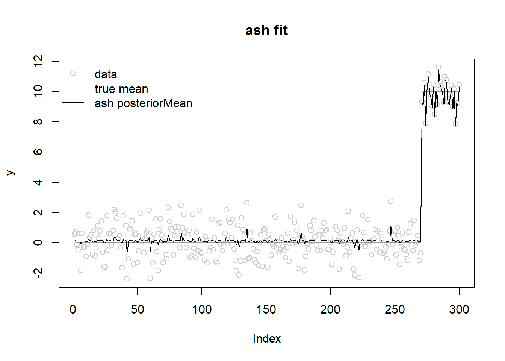
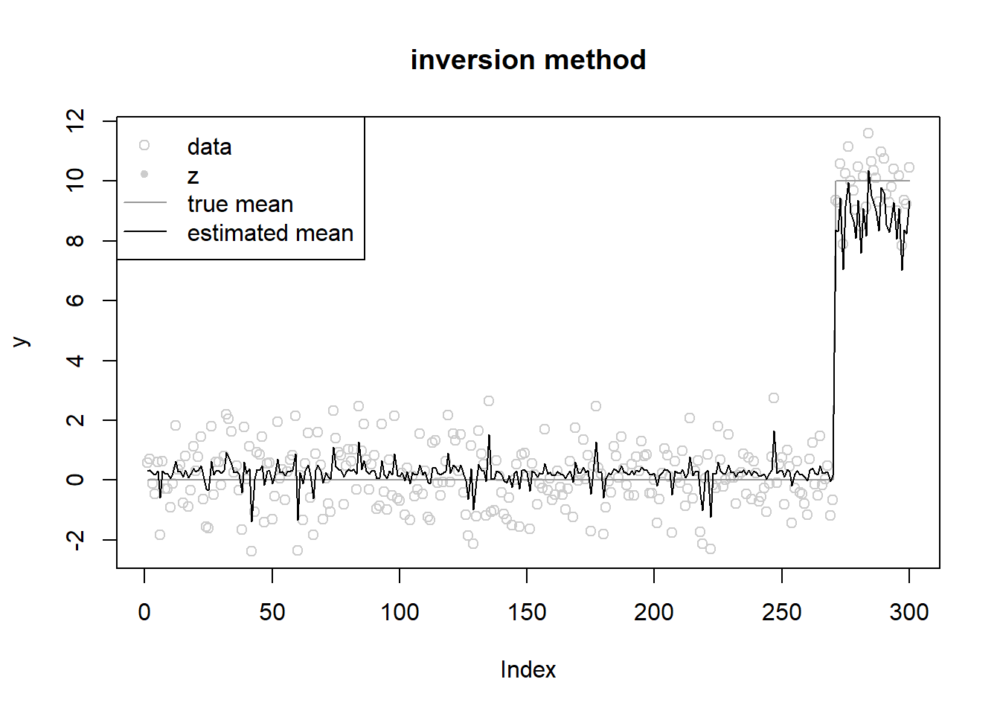
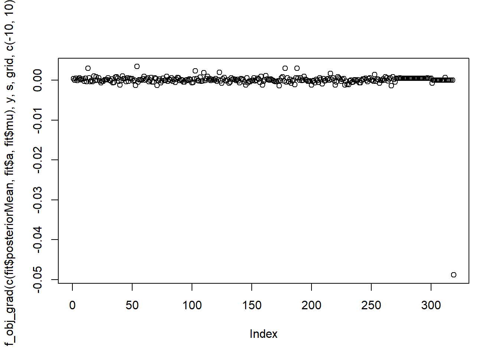
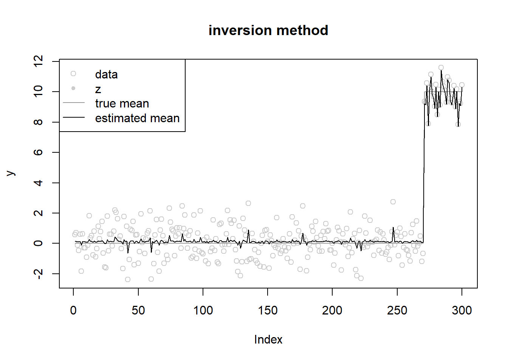

Last updated: 2022-10-11
Checks: 7 0
Knit directory: gsmash/
This reproducible R Markdown analysis was created with workflowr (version 1.7.0). The Checks tab describes the reproducibility checks that were applied when the results were created. The Past versions tab lists the development history.
Great! Since the R Markdown file has been committed to the Git repository, you know the exact version of the code that produced these results.
Great job! The global environment was empty. Objects defined in the global environment can affect the analysis in your R Markdown file in unknown ways. For reproduciblity it’s best to always run the code in an empty environment.
The command set.seed(20220606) was run prior to running
the code in the R Markdown file. Setting a seed ensures that any results
that rely on randomness, e.g. subsampling or permutations, are
reproducible.
Great job! Recording the operating system, R version, and package versions is critical for reproducibility.
Nice! There were no cached chunks for this analysis, so you can be confident that you successfully produced the results during this run.
Great job! Using relative paths to the files within your workflowr project makes it easier to run your code on other machines.
Great! You are using Git for version control. Tracking code development and connecting the code version to the results is critical for reproducibility.
The results in this page were generated with repository version 979e654. See the Past versions tab to see a history of the changes made to the R Markdown and HTML files.
Note that you need to be careful to ensure that all relevant files for
the analysis have been committed to Git prior to generating the results
(you can use wflow_publish or
wflow_git_commit). workflowr only checks the R Markdown
file, but you know if there are other scripts or data files that it
depends on. Below is the status of the Git repository when the results
were generated:
Ignored files:
Ignored: .Rhistory
Ignored: .Rproj.user/
Untracked files:
Untracked: analysis/.ipynb_checkpoints/
Untracked: analysis/symbolic_diff_python.ipynb
Unstaged changes:
Modified: analysis/normal_mean_penalty_glm_simplified.Rmd
Modified: code/normal_mean_model_utils.R
Note that any generated files, e.g. HTML, png, CSS, etc., are not included in this status report because it is ok for generated content to have uncommitted changes.
These are the previous versions of the repository in which changes were
made to the R Markdown
(analysis/normal_mean_penalized_optimization_prior_mean.Rmd)
and HTML
(docs/normal_mean_penalized_optimization_prior_mean.html)
files. If you’ve configured a remote Git repository (see
?wflow_git_remote), click on the hyperlinks in the table
below to view the files as they were in that past version.
| File | Version | Author | Date | Message |
|---|---|---|---|---|
| Rmd | 979e654 | Dongyue Xie | 2022-10-11 | wflow_publish("analysis/normal_mean_penalized_optimization_prior_mean.Rmd") |
| html | 3bfad05 | Dongyue Xie | 2022-10-11 | Build site. |
| Rmd | e3a9d3c | Dongyue Xie | 2022-10-11 | wflow_publish("analysis/normal_mean_penalized_optimization_prior_mean.Rmd") |
Add support for prior mean, \(g=\sum_k\pi_k N(\mu,\sigma^2_k)\).
See the previous one for the case with \(\mu=0\).
source("code/normal_mean_model_utils.R")set.seed(12345)
n = 300
w0 = 0.9
lambda = c(rep(0,round(n*w0)),rep(10,n-round(n*w0)))
w_true = c(w0,1-w0)
grid_true = c(0.01,7)
s = rep(1,n)
y = rnorm(n,lambda,s)
library(ashr)
fit.ash = ashr::ash(y,s,mixcompdist = 'normal',mode='estimate')
#grid = exp(seq(log(s/100),log(sqrt(max(abs(y^2-s^2)))),by=log(sqrt(2))))
#fit.ash = S(y,s,w_true,grid_true)
#plot(fit.ash$fitted_g$sd,fit.ash$fitted_g$pi)
grid = fit.ash$fitted_g$sd
K = length(grid)ploter = function(fit,y,lambda,main='known prior'){
plot(y,main=main,col='grey80')
lines(lambda,col='grey60')
lines(fit$z,type='p',pch=20,col='grey80')
lines(fit$posteriorMean)
legend('topleft',c('data','z','true mean','estimated mean'),pch=c(1,20,NA,NA),lty=c(NA,NA,1,1),col=c('grey80','grey80','grey60',1))
}fit.ash = ash(y,s,mixcompdist = 'normal',pointmass=F,prior='uniform',mixsd=grid,mode='estimate')
plot(y,main='ash fit',col='grey80')
lines(lambda,col='grey60')
lines(fit.ash$result$PosteriorMean)
legend('topleft',c('data','true mean','ash posteriorMean'),pch=c(1,NA,NA),lty=c(NA,1,1),col=c('grey80','grey60',1))
fit.ash$fitted_g$pi
[1] 0.1640290 0.6978145 0.0000000 0.0000000 0.0000000 0.0000000 0.0000000
[8] 0.0000000 0.0000000 0.0000000 0.0000000 0.0000000 0.0000000 0.0000000
[15] 0.1381564 0.0000000 0.0000000 0.0000000
$mean
[1] 0.1263976 0.1263976 0.1263976 0.1263976 0.1263976 0.1263976 0.1263976
[8] 0.1263976 0.1263976 0.1263976 0.1263976 0.1263976 0.1263976 0.1263976
[15] 0.1263976 0.1263976 0.1263976 0.1263976
$sd
[1] 0.00000000 0.08925154 0.12622074 0.17850309 0.25244149 0.35700617
[7] 0.50488297 0.71401235 1.00976595 1.42802470 2.01953189 2.85604939
[13] 4.03906379 5.71209879 8.07812757 11.42419757 16.15625515 22.84839515
attr(,"class")
[1] "normalmix"
attr(,"row.names")
[1] 1 2 3 4 5 6 7 8 9 10 11 12 13 14 15 16 17 18#'objective function
#'@param theta (z,w,mu)
#'@param grid prior sds
f_obj = function(theta,y,s,grid){
n = length(y)
K = length(grid)
w = softmax(theta[(n+1):(n+K)])
z = theta[1:n]
mu = theta[n+K+1]
res = sum((y-z-s^2*l_nm_d1_z(z,s,w,mu,grid))^2/2/s^2 - l_nm(z,s,w,mu,grid) - s^2*(l_nm_d1_z(z,s,w,mu,grid))^2/2)
return(res)
}
#'objective function
#'@param theta (mu_bar,w,mu)
#'@param grid prior sds
f_obj_grad = function(theta,y,s,grid){
n = length(y)
K = length(grid)
a = theta[(n+1):(n+K)]
w = softmax(a)
z = theta[1:n]
mu = theta[n+K+1]
grad_z = (1+s^2*l_nm_d2_z(z,s,w,mu,grid))*(z-y)/s^2
grad_a = colSums((s^2*l_nm_d1_z(z,s,w,mu,grid)-y+z)*l_nm_d2_za(z,s,a,mu,grid) - l_nm_d1_a(z,s,a,mu,grid) - s^2*l_nm_d1_z(z,s,w,mu,grid)*l_nm_d2_za(z,s,a,mu,grid))
grad_mu = sum(-(l_nm_d2_zmu(z,s,w,mu,grid)*(y-z)+l_nm_d1_mu(z,s,w,mu,grid)))
return(c(grad_z,c(grad_a),grad_mu))
}
ebnm_penalized_compound = function(x,s,grid,z_init = NULL,
w_init=NULL,mu_init = 0,opt_method = 'L-BFGS-B'){
n = length(x)
K = length(grid)
if(is.null(w_init)){
w_init = rep(1/K,K)
}
if(length(s)==1){
s = rep(s,n)
}
if(is.null(z_init)){
z_init = x
}
if(is.null(mu_init)){
mu_init = 0
}
out = optim(c(z_init,w_init,mu_init),
fn=f_obj,
gr=f_obj_grad,
method=opt_method,
y=y,grid=grid,s=s)
z = out$par[1:n]
a = out$par[(n+1):(n+K)]
w = softmax(a)
mu = out$par[n+K+1]
posteriorMean = S(z,s,w,mu,grid)
return(list(z=z,w=w,mu=mu,a=a,posteriorMean=posteriorMean,opt_res = out))
}fit = ebnm_penalized_compound(y,s,grid,opt_method = 'L-BFGS-B')
fit$w [1] 5.155791e-01 2.256561e-01 9.944183e-02 2.011789e-02 9.931201e-04
[6] 4.664628e-06 6.655961e-10 1.023420e-15 9.242831e-24 2.485051e-33
[11] 5.681738e-42 1.445639e-46 1.007825e-41 1.776286e-22 1.382073e-01
[16] 8.434859e-15 1.731358e-29 8.259892e-41fit$mu[1] 0.1259986fit$opt_res$value[1] 592.05ploter(fit,y,lambda,main='compound penalty')#'objective function
#'@param theta (theta,w,mu)
#'@param grid prior sds
f_obj = function(params,y,s,grid,z_range){
n = length(y)
K = length(grid)
w = softmax(params[(n+1):(n+K)])
theta = params[1:n]
mu = params[n+K+1]
z = S_inv(theta,s,w,mu,grid,z_range)
return(sum((y-theta)^2/2/s^2 - l_nm(z,s,w,mu,grid)-(z-theta)^2/2/s^2))
}
#'objective function
#'@param theta (theta,w,mu)
#'@param grid prior sds
f_obj_grad = function(params,y,s,grid,z_range){
n = length(y)
K = length(grid)
a = params[(n+1):(n+K)]
w = softmax(a)
theta = params[1:n]
mu = params[n+K+1]
z = S_inv(theta,s,w,mu,grid,z_range)
grad_theta = (z-y)/s^2
grad_a = -colSums(l_nm_d1_a(z,s,a,mu,grid))
grad_mu = -sum(l_nm_d1_mu(z,s,w,mu,grid))
return(c(grad_theta,c(grad_a),grad_mu))
}
ebnm_penalized_inversion = function(x,s,grid,theta_init = NULL,
w_init=NULL,mu_init=NULL,z_range=NULL,opt_method = 'L-BFGS-B'){
n = length(x)
K = length(grid)
if(is.null(w_init)){
w_init = rep(1/K,K)
}
if(length(s)==1){
s = rep(s,n)
}
if(is.null(theta_init)){
theta_init = rep(0,n)
}
if(is.null(z_range)){
z_range = range(x) + c(-1,1)
}
if(is.null(mu_init)){
mu_init = 0
}
params = c(theta_init,w_init,mu_init)
out = optim(params,
fn=f_obj,
gr = f_obj_grad,
y=x,
s=s,
grid=grid,
z_range=z_range,
method = opt_method,
control=list(maxit=1000,trace=1))
return(list(posteriorMean = out$par[1:n],a = out$par[(n+1):(n+K)] ,w = softmax(out$par[(n+1):(n+K)]),mu=out$par[n+K+1],opt_res = out))
}fit = ebnm_penalized_inversion(y,s,grid,opt_method = 'L-BFGS-B')iter 10 value 916.791551
iter 20 value 680.289814
iter 30 value 676.275302
iter 40 value 674.754978
iter 50 value 674.164319
iter 60 value 673.936203
iter 70 value 673.813463
iter 80 value 673.701252
iter 90 value 673.574599
iter 100 value 673.513587
iter 110 value 673.482799
iter 120 value 673.460379
iter 130 value 673.441826
iter 140 value 673.430328
iter 150 value 673.420092
iter 160 value 673.412990
iter 170 value 673.405236
iter 180 value 673.403300
iter 190 value 673.401169
iter 200 value 673.398705
iter 210 value 673.395894
iter 220 value 673.393414
iter 230 value 673.389377
iter 240 value 673.384472
iter 250 value 673.379168
iter 260 value 673.374583
iter 270 value 673.370725
iter 280 value 673.368396
iter 290 value 673.367189
iter 300 value 673.366888
iter 310 value 673.366488
iter 320 value 673.366221
iter 330 value 673.365556
iter 340 value 673.364958
iter 350 value 673.364795
iter 360 value 673.363563
iter 370 value 673.362471
iter 380 value 673.361861
iter 390 value 673.361754
final value 673.361715
convergedround(fit$w,3) [1] 0.745 0.000 0.000 0.000 0.000 0.000 0.000 0.000 0.000 0.000 0.000 0.255
[13] 0.000 0.000 0.000 0.000 0.000 0.000fit$mu[1] 0.2723038fit$opt_res$value[1] 673.3617ploter(fit,y,lambda,main='inversion method')
Take a look at the gradient.
plot(f_obj_grad(c(fit$posteriorMean,fit$a,fit$mu),y,s,grid,c(-10,10)))
It seems that the gradient is not close to 0 enough…may need to change initialization or convergence criteria.
fit = ebnm_penalized_inversion(y,s,grid,theta_init = fit.ash$result$PosteriorMean,opt_method = 'L-BFGS-B')iter 10 value 604.772606
iter 20 value 597.279634
iter 30 value 593.797933
iter 40 value 592.623186
iter 50 value 592.229877
iter 60 value 592.171496
iter 70 value 592.134525
iter 80 value 592.090706
iter 90 value 592.078472
iter 100 value 592.072828
iter 110 value 592.070486
iter 120 value 592.067446
iter 130 value 592.065486
iter 140 value 592.061779
iter 150 value 592.059573
iter 160 value 592.058335
iter 170 value 592.056998
iter 180 value 592.054891
iter 190 value 592.053641
iter 200 value 592.052267
iter 210 value 592.051554
final value 592.051373
convergedround(fit$w,3) [1] 0.386 0.246 0.154 0.062 0.012 0.001 0.000 0.000 0.000 0.000 0.000 0.000
[13] 0.000 0.000 0.138 0.000 0.000 0.000fit$mu[1] 0.1262144fit$opt_res$value[1] 592.0514ploter(fit,y,lambda,main='inversion method')fit = ebnm_penalized_inversion(y,s,grid,theta_init = y,opt_method = 'L-BFGS-B')iter 10 value 601.432580
iter 20 value 596.081624
iter 30 value 594.038387
iter 40 value 593.499864
iter 50 value 592.965981
iter 60 value 592.712260
iter 70 value 592.543050
iter 80 value 592.384290
iter 90 value 592.338211
iter 100 value 592.226144
iter 110 value 592.192770
iter 120 value 592.152542
iter 130 value 592.127855
iter 140 value 592.118878
iter 150 value 592.112448
iter 160 value 592.108004
iter 170 value 592.103310
iter 180 value 592.095447
iter 190 value 592.087116
iter 200 value 592.083100
iter 210 value 592.078801
iter 220 value 592.070539
iter 230 value 592.065541
iter 240 value 592.062380
iter 250 value 592.060465
iter 260 value 592.059115
iter 270 value 592.058448
iter 280 value 592.058086
iter 290 value 592.057721
iter 300 value 592.057549
iter 310 value 592.057196
iter 320 value 592.056769
iter 330 value 592.056502
iter 340 value 592.056145
iter 350 value 592.055410
iter 360 value 592.055007
iter 370 value 592.054478
iter 380 value 592.053732
iter 390 value 592.053054
iter 400 value 592.052602
iter 410 value 592.052068
iter 420 value 592.051450
iter 430 value 592.051120
iter 440 value 592.051011
final value 592.050997
convergedround(fit$w,3) [1] 0.262 0.292 0.239 0.069 0.001 0.000 0.000 0.000 0.000 0.000 0.000 0.000
[13] 0.000 0.000 0.138 0.000 0.000 0.000fit$mu[1] 0.1261618fit$opt_res$value[1] 592.051ploter(fit,y,lambda,main='inversion method')
sessionInfo()R version 4.2.1 (2022-06-23 ucrt)
Platform: x86_64-w64-mingw32/x64 (64-bit)
Running under: Windows 10 x64 (build 22621)
Matrix products: default
locale:
[1] LC_COLLATE=English_United States.utf8
[2] LC_CTYPE=English_United States.utf8
[3] LC_MONETARY=English_United States.utf8
[4] LC_NUMERIC=C
[5] LC_TIME=English_United States.utf8
attached base packages:
[1] stats graphics grDevices utils datasets methods base
other attached packages:
[1] ashr_2.2-54 workflowr_1.7.0
loaded via a namespace (and not attached):
[1] Rcpp_1.0.9 highr_0.9 compiler_4.2.1 pillar_1.8.1
[5] bslib_0.4.0 later_1.3.0 git2r_0.30.1 jquerylib_0.1.4
[9] tools_4.2.1 getPass_0.2-2 digest_0.6.29 lattice_0.20-45
[13] jsonlite_1.8.0 evaluate_0.16 tibble_3.1.8 lifecycle_1.0.2
[17] pkgconfig_2.0.3 rlang_1.0.5 Matrix_1.4-1 cli_3.3.0
[21] rstudioapi_0.14 yaml_2.3.5 xfun_0.32 fastmap_1.1.0
[25] invgamma_1.1 httr_1.4.4 stringr_1.4.1 knitr_1.40
[29] fs_1.5.2 vctrs_0.4.1 sass_0.4.2 grid_4.2.1
[33] rprojroot_2.0.3 glue_1.6.2 R6_2.5.1 processx_3.7.0
[37] fansi_1.0.3 rmarkdown_2.16 mixsqp_0.3-47 irlba_2.3.5
[41] callr_3.7.2 magrittr_2.0.3 whisker_0.4 ps_1.7.1
[45] promises_1.2.0.1 htmltools_0.5.3 httpuv_1.6.5 utf8_1.2.2
[49] stringi_1.7.8 truncnorm_1.0-8 SQUAREM_2021.1 cachem_1.0.6